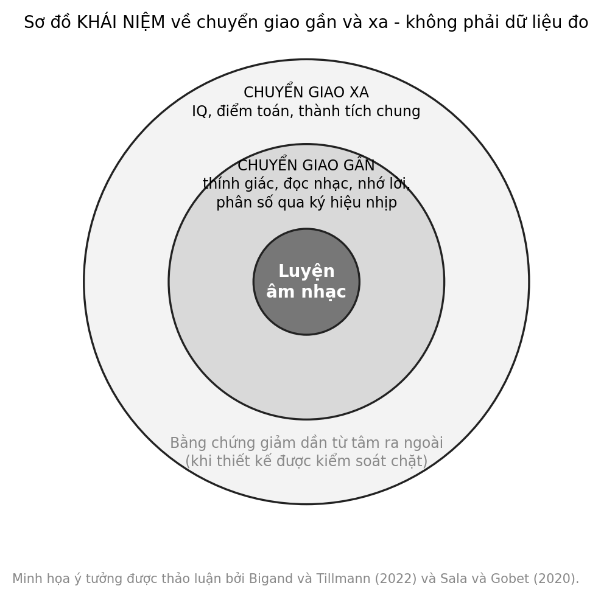

7 Toán học nghe được
Một em học sinh lớp Ba cau mày trước phép tính một phần hai cộng một phần tư. Cô giáo cho cả lớp vỗ tay: một tiếng dài cho nốt trắng, hai tiếng ngắn cho hai nốt đen. Em bỗng reo lên: hai tiếng ngắn dài bằng một tiếng dài. Có lẽ em vừa hiểu điều mà mấy hàng chữ không giải thích được. Nhưng liệu một khoảnh khắc như vậy có nghĩa là nhạc làm trẻ giỏi toán?
Câu hỏi trung tâm
Phần nào của mối liên hệ giữa nhạc và toán có cơ sở, và vì sao “hiệu ứng Mozart” là một neuromyth Neuromyth (Pietschnig và c.s., 2010)? Chương này tách ba thứ thường bị trộn lẫn: cấu trúc chung giữa ký hiệu nhịp và phân số, việc nghe nhạc thụ động, và việc luyện tập âm nhạc chủ động trong nhiều năm. Mỗi thứ có một mức bằng chứng riêng, và chỉ thứ thứ nhất có cơ sở rõ ràng cho lớp học hôm nay.
Ba thuật ngữ nền
Chuyển giao gần (near transfer) là khi điều đã luyện giúp ích cho một nhiệm vụ rất giống, chẳng hạn học ký hiệu nhịp rồi hiểu phân số có cùng cấu trúc. Chuyển giao xa (far transfer) là khi điều đã luyện giúp ích cho nhiệm vụ khác hẳn, chẳng hạn học đàn để cải thiện điểm toán nói chung. Nhóm đối chứng hoạt động là nhóm làm một hoạt động hấp dẫn tương đương nhưng không phải âm nhạc, cho phép tách tác động của âm nhạc khỏi tác động của việc được chú ý. Cả chương xoay quanh ba khái niệm này.
Cách đọc chương này
Chương đi theo năm bước: cấu trúc chung của nhịp và phân số; câu chuyện về một neuromyth quen thuộc; sự khác biệt giữa nghe thụ động và luyện tập chủ động; vì sao tương quan không phải nhân quả; và các giới hạn. Chương này khó chịu với một số người đọc, vì nó nói rằng nhiều điều quen thuộc về nhạc và trí thông minh không có cơ sở. Nhưng nói điều đó rõ ràng là cách tốt nhất để bảo vệ cái có cơ sở: một ký hiệu nhịp giúp hiểu phân số.
1. Tỷ lệ, phân số và pattern: một cấu trúc chung thật sự
Có một điều có cơ sở rõ ràng ở đây, và nó nằm ngay trong ký hiệu. Trong ký hiệu nhạc thông dụng, độ dài của các nốt giảm dần theo tỷ lệ một phần hai: một nốt tròn dài bằng hai nốt trắng, bằng bốn nốt đen, bằng tám nốt móc đơn. Đó chính là cấu trúc của phân số một phần hai, một phần tư, một phần tám. Nghe một nhịp là nghe một thứ có thể đếm, chia và ghép, và điều đó gần với những gì trẻ cần làm với phân số.
Cần nói ngay giới hạn của sự so sánh này để không dạy sai. Giá trị của một nốt trong ký hiệu nhạc là tương đối: nốt đen bằng một phần tư của nốt tròn, nhưng nó có thể là một phách hay nửa phách tùy nhịp và cách đếm. Nốt có chấm dôi, nhịp phức hay nhịp ba cho những tỷ lệ không chỉ là lũy thừa của một phần hai. Vì thế, trong lớp, nên bắt đầu với những tỷ lệ đơn giản, và nói rõ rằng đây là một cách minh họa chứ không phải toàn bộ lý thuyết nhịp.
Một nghiên cứu ở lớp Ba kiểm tra trực tiếp ý tưởng này. Ba mươi mấy em nhận một chương trình “Academic Music” dùng ký hiệu nhạc, vỗ tay, đánh trống và hô nhịp để dạy khái niệm phân số, hai buổi mỗi tuần, mỗi buổi bốn mươi lăm phút, trong sáu tuần; nhóm so sánh học chương trình toán thông thường (tổng cộng 67 em, phân nhóm theo lớp). Nhóm học bằng nhạc làm bài tốt hơn về ký hiệu âm nhạc và tính toán phân số, nhưng không hơn ở bài kiểm tra khái niệm phân số Sơ bộ (Courey và c.s., 2012). Đánh giá của một cơ quan thẩm định giáo dục cho rằng không thể tách tác động của chương trình khỏi tác động của việc nhóm nghiên cứu trực tiếp giảng dạy, nên các kết quả được coi là gợi ý chứ chưa đủ để kết luận. Chúng ta đọc tóm tắt đánh giá ấy chứ chưa đọc toàn văn.
Có ba điểm đáng lưu ý. Đây là một nghiên cứu nhỏ, phân nhóm theo lớp chứ không ngẫu nhiên theo từng em. Phần được cải thiện là phần gần với những gì đã dạy, tức ký hiệu và tính toán, không phải khái niệm trừu tượng hơn. Và nó là chuyển giao gần: ký hiệu nhịp và ký hiệu phân số có chung cấu trúc, và chính việc dạy dùng cấu trúc ấy. Chúng ta chưa có nghiên cứu nào ở Việt Nam kiểm chứng điều này.
Pattern là một mối nối khác. Một chuỗi vỗ tay như dài–dài–ngắn–ngắn lặp lại, hay A–A–B–B, là một đối tượng toán học đơn giản: nó có đơn vị lặp, có thể được mô tả bằng ký hiệu, và có thể được đoán tiếp. Đó là cách rèn luyện nhận ra quy luật bằng tai và tay trước khi dùng chữ. Vì chưa có thử nghiệm đối chứng nào về chính hoạt động này mà chúng ta biết, điều có thể nói là nó có lý về mặt cấu trúc và sư phạm Thực tiễn sư phạm.
Một lưu ý quan trọng: cấu trúc chung không tự động tạo ra chuyển giao. Việc nhịp và phân số giống nhau về cấu trúc không có nghĩa trẻ thấy sự giống nhau ấy; người dạy phải chỉ ra sự tương ứng và để trẻ thử cả hai chiều. Chương này sẽ quay lại điều đó ở phần ứng dụng.
Một mối nối khác thường được nhắc đến là tỷ lệ trong cao độ. Quãng tám ứng với tỷ lệ tần số hai trên một, và quãng năm đúng với ba trên hai; ở Chương 8 chúng ta sẽ thấy vì sao tỷ lệ đơn giản liên quan đến cảm giác hòa hợp, qua một nghiên cứu cổ điển về hòa âm và băng tần tới hạn Sơ bộ (Plomp & Levelt, 1965). Nhưng đây là vật lý và nhận thức về âm thanh, không phải một quy luật toán học ẩn giấu sau âm nhạc, và cũng không có bằng chứng rằng hiểu tỷ lệ tần số giúp trẻ làm toán tốt hơn.
2. Hiệu ứng Mozart: câu chuyện của một neuromyth
Năm 1993, một nhóm nghiên cứu báo cáo trên tạp chí Nature rằng sinh viên đại học làm một bài kiểm tra tư duy không gian tốt hơn sau khi nghe một đoạn sonata của Mozart so với sau khi ngồi yên hoặc nghe điều khác Sơ bộ (Rauscher và c.s., 1993). Đoạn nhạc được dùng là chương đầu của sonata cho hai đàn piano cung Rê trưởng, K.448. Hiệu ứng được báo cáo là ngắn, chỉ kéo dài trong thời gian ngắn sau khi nghe, và giới hạn ở một loại nhiệm vụ không gian-thời gian. Một công bố nối tiếp của cùng nhóm cũng báo cáo hiệu ứng tương tự theo hướng cho rằng cơ chế liên quan đến hoạt động thần kinh Sơ bộ (Rauscher và c.s., 1995). Đây là điểm xuất phát: một kết quả nhỏ, ngắn, ở người lớn, trên một loại nhiệm vụ cụ thể.
Điều xảy ra sau đó là điều chúng ta gọi là neuromyth. Một niềm tin phổ biến cho rằng nghe nhạc cổ điển, đặc biệt của Mozart, làm trẻ thông minh hơn nói chung, và niềm tin ấy được các phương tiện truyền thông, các sản phẩm thương mại và đôi khi cả chính sách nhắc đến. Đây là một neuromyth Neuromyth (Howard-Jones, 2014; Pietschnig và c.s., 2010). Cụm “neuromyth” ở đây chỉ một quan niệm sai về não được đón nhận rộng rãi vì nghe có vẻ khoa học.
Bằng chứng cho thấy điều gì? Tổng hợp phân tích của Pietschnig và cộng sự, gộp khoảng ba mươi tám đến ba mươi chín nghiên cứu, ghi nhận rằng hiệu ứng, nếu có, rất nhỏ; hiệu ứng của chính bản sonata K.448 so với không nghe gì tương tự hiệu ứng của nhạc nói chung so với không nghe gì; và các nghiên cứu do nhóm gốc thực hiện cho kết quả lớn hơn các nghiên cứu của nhóm khác (theo các tóm tắt thứ cấp mà chúng ta đọc) Neuromyth (Pietschnig và c.s., 2010). Điều này có nghĩa là ngay cả hiệu ứng hẹp ban đầu cũng không đứng vững như được tuyên bố.
Một cách giải thích khác được đề xuất: hiệu ứng, nếu có, đến từ mức kích thích và tâm trạng, chứ không từ nhạc của Mozart. Một thí nghiệm cho thấy mức kích thích và tâm trạng giải thích hiệu ứng Sơ bộ (Thompson và c.s., 2001). Một thí nghiệm khác cho thấy hiệu ứng thay đổi theo việc người nghe thích gì, với việc nghe một câu chuyện mà người tham gia thích cũng cho kết quả tương tự Sơ bộ (Nantais & Schellenberg, 1999). Hai kết quả này gợi ý rằng điều quan trọng không phải là Mozart, mà là việc người nghe được kích thích ở mức vừa phải bởi thứ họ thích, một điều ngắn hạn và không đặc thù.
Cũng cần nói rõ điều mà tổng hợp phân tích không nói. Nó không nói rằng nghe nhạc là vô ích hay vô nghĩa. Nó không nói rằng chưa từng có ai trải nghiệm sự tập trung tốt hơn sau khi nghe một bản nhạc mình thích; nó chỉ nói rằng không có một hiệu ứng đặc thù của Mozart lên trí tuệ. Và nó không nói gì về lợi ích của việc học nhạc trong nhiều năm, vốn là một câu hỏi khác.
Vì sao neuromyth này lan rộng? Có ba lý do dễ hiểu. Nó có một kết quả thật làm nền, dù nhỏ. Nó đưa ra một lời hứa dễ chịu, rằng chỉ cần nghe là đủ. Và nó nghe có vẻ khoa học. Các khảo sát giáo viên ở một số nước cho thấy nhiều neuromyth vẫn được tin rộng rãi trong nhà trường Sơ bộ (Dekker và c.s., 2012). Hiện chưa có dữ liệu đủ lớn ở Việt Nam về mức độ phổ biến của niềm tin này ở giáo viên và phụ huynh; đây là hướng nghiên cứu ưu tiên.
Cách một kết quả nhỏ trở thành một tuyên bố lớn cũng đáng nhìn kỹ. Một kết quả thú vị được công bố trên một tạp chí uy tín. Một bản tin rút gọn nó thành một câu dễ nhớ. Một sản phẩm thương mại dùng câu ấy để bán hàng. Rồi đến lúc có những nghiên cứu lặp lại không thấy hiệu ứng, câu chuyện đã đi quá xa để kéo lại. Quy trình này không đặc thù cho âm nhạc, và biết nó giúp ta thận trọng hơn với bất kỳ câu nào bắt đầu bằng “nghiên cứu mới cho thấy”.
Điều cần giữ lại thật hẹp. Cái được gọi là hiệu ứng Mozart chỉ là tên của một kết quả hẹp và ngắn, không phải một cách làm trẻ thông minh hơn Neuromyth (Pietschnig và c.s., 2010). Nghe nhạc Mozart là một thú vui chính đáng, và không cần lý do học tập để biện minh cho nó.
3. Nghe thụ động, luyện tập chủ động và chuyển giao
Điều được gọi là hiệu ứng Mozart là một dạng nghe thụ động, trong đó người tham gia chỉ ngồi và nghe Neuromyth (Pietschnig và c.s., 2010; Rauscher và c.s., 1993). Phần lớn nghiên cứu nghiêm túc về nhạc và học tập nói về điều khác hẳn: luyện tập chủ động trong nhiều tháng hoặc nhiều năm. Từ đó chúng ta có thể giữ lại một mệnh đề thận trọng: nghe thụ động khác với chơi và hiểu cấu trúc. Mệnh đề giải mã thành ba điều. Nghe một đoạn nhạc không đòi hỏi người nghe tạo ra, kiểm soát hay hiểu cấu trúc của nó. Chơi, hát, đọc nhạc hay sáng tác đòi hỏi những điều ấy, nên có thể huy động những kỹ năng khác. Và vì hai hoạt động khác nhau, bằng chứng về hoạt động này không thể mang sang cho hoạt động kia.
Bằng chứng cho luyện tập chủ động cũng cần được đọc cẩn thận. Một thử nghiệm cho trẻ sáu tuổi học đàn hoặc học hát trong cả năm học, so sánh với học kịch và không học gì thêm, ghi nhận rằng điểm IQ của nhóm học nhạc nhích lên nhiều hơn nhóm không học thêm, chênh lệch khoảng vài điểm Sơ bộ (Schellenberg, 2004). Một thử nghiệm kéo dài ba năm với trẻ học piano lại không thấy khác biệt có ý nghĩa về thành tích học tập so với nhóm đối chứng Sơ bộ (Costa-Giomi, 2004). Hai thử nghiệm ngẫu nhiên ở trẻ mầm non, so sánh các lớp nhạc với lớp mỹ thuật và với không can thiệp, không thấy bằng chứng nhất quán về lợi ích nhận thức ngoài âm nhạc Sơ bộ (Mehr và c.s., 2013). Một tổng hợp phân tích sớm về luyện nhạc và tư duy không gian báo cáo mối liên hệ rõ Sơ bộ (Hetland, 2000), nhưng các tổng hợp sau với kiểm soát thiết kế chặt hơn cho kết quả nhỏ hơn nhiều.
Tổng hợp phân tích lớn nhất cho đến nay đã cho một câu trả lời. Sala và Gobet gộp 54 nghiên cứu với 6.984 trẻ và kết luận rằng khi kiểm soát chất lượng thiết kế, tác động chung của luyện âm nhạc lên kỹ năng nhận thức và thành tích học tập gần bằng không và rất nhất quán giữa các nghiên cứu; tác động nhỏ, khoảng 0,2, chỉ xuất hiện ở những nghiên cứu không phân nhóm ngẫu nhiên và dùng nhóm đối chứng không hoạt động Trung bình (Sala & Gobet, 2020).
Một điểm đáng chú ý của tổng hợp ấy là kết luận không thay đổi theo loại kết quả đo, tuổi của trẻ hay thời gian luyện tập. Điều đó có nghĩa là việc luyện lâu hơn hay bắt đầu sớm hơn, trong dữ liệu hiện có, không làm xuất hiện lợi ích xa. Chúng ta vẫn chưa biết một chương trình âm nhạc chất lượng rất cao, kéo dài nhiều năm, với giáo viên giỏi, có thể làm được điều khác hay không, vì các chương trình trong những nghiên cứu ấy rất đa dạng và hầu hết ngắn. Một tổng hợp trước đó của cùng nhóm, với 38 nghiên cứu và 3.085 người tham gia, đã ghi nhận tác động chung nhỏ hơn và gần không khi dùng đối chứng hoạt động và phân nhóm ngẫu nhiên Trung bình (Sala & Gobet, 2017). Một tổng quan khác diễn giải theo hướng khác: luyện nhạc đem lại chuyển giao gần, nhất là về kỹ năng thính giác và ngôn ngữ, trong khi chuyển giao xa còn bị tranh luận Giả thuyết (Bigand & Tillmann, 2022).
Cách đọc hợp lý là phân biệt. Có chuyển giao gần ở một số nhiệm vụ: kỹ năng thính giác, nhớ lời, đọc nhạc, hiểu phân số qua ký hiệu nhịp. Không có chuyển giao xa nhất quán lên IQ, toán nói chung hay thành tích học tập chung khi thiết kế được kiểm soát. Điều này khớp với mệnh đề ở Chương 6: âm nhạc không thay thế kiến thức; nó có thể mở đường cho một số dạng học. Mệnh đề giải mã thành ba điều: một số dạng học có thể hưởng lợi trực tiếp, lợi ích tùy vào việc người dạy chỉ ra mối nối, và không có cơ sở để hứa rằng học nhạc làm trẻ giỏi mọi môn.
4. Tương quan không phải nhân quả
Nếu luyện nhạc không đem lại thay đổi rõ rệt ở điểm IQ, vì sao trẻ học nhạc thường có điểm số cao hơn? Câu trả lời thường là chọn lọc. Trẻ bắt đầu học nhạc, và kiên trì học, thường là những trẻ đến từ gia đình có điều kiện hơn, có cha mẹ học vấn cao hơn, có khả năng tập trung và kiên trì sẵn có. Những khác biệt ấy có trước việc học nhạc và có thể giải thích phần lớn mối liên hệ quan sát được, theo lập luận của Schellenberg Giả thuyết (Schellenberg, 2020). Một nghiên cứu theo dõi dài hạn cho thấy mối liên hệ giữa bài học nhạc và IQ tồn tại và kéo dài, nhưng đó là mối liên hệ chứ chưa phải bằng chứng nhân quả Sơ bộ (Schellenberg, 2006).
Một lưu ý cho cả người đọc lẫn người viết: khi một bài báo hay quảng cáo nói “trẻ học nhạc giỏi hơn”, hãy hỏi chúng được chọn vào nhóm học nhạc như thế nào. Nếu cha mẹ tự chọn cho con học, nhóm ấy đã khác nhóm còn lại trước khi bài học đầu tiên diễn ra. Chỉ phân nhóm ngẫu nhiên mới trả lời được câu hỏi “nhạc có gây ra điều đó không”, và chính những thử nghiệm ngẫu nhiên với nhóm đối chứng hoạt động mới cho kết quả gần không.
Kích thước hiệu ứng cũng quan trọng. Một đề xuất thường được trích để diễn giải hiệu ứng trong giáo dục là của Kraft, xem hiệu ứng nhỏ hơn 0,05 là nhỏ và lớn hơn 0,20 là lớn khi đo bằng các bài kiểm tra thành tích chuẩn hóa trong thử nghiệm nhân quả (Kraft, 2020). Con số “khoảng 0,2” mà Sala và Gobet thấy ở các thiết kế yếu, vì vậy, đã là một hiệu ứng đáng kể theo tiêu chuẩn ấy nếu nó thật, và đó là lý do vì sao việc kiểm tra xem nó có đứng vững khi thiết kế tốt hơn lại quan trọng đến vậy. Kết quả hiện có cho thấy nó không đứng vững.
Tất cả điều này không phải lời khuyên bỏ học nhạc. Nó là một lời khuyên về cách chọn lý do. Một em nên học nhạc vì em thích, vì cộng đồng và truyền thống quanh em có âm nhạc, vì bản thân việc chơi và hát là một cách tồn tại phong phú. Những lý do ấy đứng vững mà không cần một con số về điểm toán. Và nếu một trường hay gia đình chỉ ủng hộ âm nhạc khi nó chứng tỏ được lợi ích học tập, họ đang đặt âm nhạc vào một cuộc thi mà nó không cần phải thắng.
Cơ chế và bằng chứng chính
| Phát biểu | Mức | Nguồn chính | Điều kiện / giới hạn |
|---|---|---|---|
| Ký hiệu nhịp và phân số có cấu trúc chung | Thực tiễn sư phạm | — | tương ứng cấu trúc; không phải kết quả thực nghiệm |
| Dạy phân số bằng nhịp cải thiện ký hiệu và tính toán, không rõ khái niệm | Sơ bộ | (Courey và c.s., 2012) | nghiên cứu nhỏ; giảng dạy do nhóm nghiên cứu; chuyển giao gần |
| Nghe Mozart làm tăng trí thông minh | Neuromyth | (Nantais & Schellenberg, 1999; Pietschnig và c.s., 2010; Thompson và c.s., 2001) | hiệu ứng ban đầu hẹp, rất nhỏ, không đặc thù cho Mozart |
| Luyện nhạc cải thiện kỹ năng thính giác và ngôn ngữ | Giả thuyết | (Bigand & Tillmann, 2022) | chuyển giao gần; bàn luận về chuyển giao xa |
| Luyện nhạc không cải thiện nhận thức và thành tích chung khi kiểm soát thiết kế | Trung bình | (Sala & Gobet, 2017, 2020) | tác động nhỏ chỉ ở thiết kế yếu |
| Trẻ học nhạc giỏi hơn là do chọn lọc | Giả thuyết | (Schellenberg, 2006, 2020) | mối liên hệ có thật; nguyên nhân còn tranh luận |
| Hoạt động nhịp–phân số trong lớp học Việt Nam | Thực tiễn sư phạm | không có thử nghiệm | khoảng trống dữ liệu |

Ứng dụng trong lớp học và gia đình Việt Nam
Hai hoạt động dưới đây dùng đúng phần có cơ sở của chương này: cấu trúc chung giữa nhịp và phân số, và nhận ra pattern.
Mục tiêu: Giúp học sinh thấy các nốt trong ký hiệu nhịp có độ dài theo tỷ lệ một phần hai, từ đó nối với cách cộng và so sánh phân số.
Chuẩn bị: Giấy hoặc bảng. Quy ước: một nốt đen bằng một phần tư (một tiếng vỗ), một nốt trắng bằng một phần hai (hai tiếng vỗ hoặc một tiếng dài), một nốt tròn bằng một (bốn tiếng). Không cần nhạc cụ.
Thời gian: 12 phút.
Các bước:
- Viết lên bảng ba ký hiệu và phân số tương ứng. Cả lớp cùng vỗ từng nốt: bốn tiếng cho nốt tròn, hai cho nốt trắng, một cho nốt đen.
- Viết: một phần hai cộng một phần tư cộng một phần tư. Cả lớp vỗ cả ba nốt liền nhau, đếm số tiếng, rồi so với một nốt tròn.
- Từng cặp tự ghép các nốt để bằng đúng một nốt tròn, rồi viết phép cộng phân số tương ứng.
- Một đội đọc phân số, đội kia vỗ nhịp tương ứng, rồi đổi vai.
- Hỏi: “Hai phần tư bằng một phần mấy?” Cho các em thử bằng nhịp trước khi trả lời bằng số.
Quan sát gì: Em nào nối được vỗ tay với con số, em nào cần nhìn bảng, và cách các em giải thích sự bằng nhau.
Biến thể: Mầm non: chỉ so sánh tiếng vỗ dài và ngắn, không dùng phân số. Tiểu học: dùng nốt móc đơn bằng một phần tám. THCS: viết các phép cộng nhiều nốt và thử cộng nhịp bằng phân số có mẫu khác nhau. Gia đình: chơi với hai đến ba người, mỗi người một nốt.
Lưu ý: Giáo viên phải chỉ ra sự tương ứng thì trẻ mới thấy; đừng chỉ chơi nhịp rồi hy vọng các em tự nối với phân số. Không nên nói rằng hoạt động này “làm giỏi toán”. Với em nhạy cảm với tiếng động, cho phép gõ lên đùi nhẹ nhàng.
Mức bằng chứng của hoạt động: Thực tiễn sư phạm. Nghiên cứu ở mục 1 gợi ý chuyển giao gần ở lớp Ba; chưa có thử nghiệm đối chứng ở lớp học Việt Nam.
Mục tiêu: Nhận ra và mô tả một pattern bằng tai và tay, rồi bằng ký hiệu chữ cái.
Chuẩn bị: Giấy bút. Hai kiểu vỗ tay dễ phân biệt: A là một tiếng vỗ, B là hai tiếng vỗ nhanh.
Thời gian: 10 phút.
Các bước:
- Giáo viên vỗ A–A–B–B hai lần. Cả lớp nghe rồi vỗ lại.
- Viết pattern lên bảng bằng chữ cái và hỏi: “Nếu tiếp tục, tiếp theo sẽ là gì?”
- Từng cặp tạo một pattern mới có bốn đến sáu ký hiệu, vỗ cho cặp bên cạnh đoán tiếp.
- Thử biến đổi: A–B–A–B, A–A–B, A–B–B. Cả lớp xếp chúng thành nhóm theo kiểu lặp lại.
- Kết thúc: mỗi em viết một pattern bằng chữ cái và nhờ bạn vỗ lại.
Quan sát gì: Em nào đoán đúng tiếp theo, em nào mô tả pattern bằng lời, và pattern nào các em thấy khó.
Biến thể: Mầm non: chỉ dùng hai ký hiệu A và B với tiếng vỗ và tiếng dậm chân. Tiểu học: thêm nhịp ba. THCS: liên hệ với chuỗi số và quy luật đại số. Gia đình: chơi trò “đoán tiếp” với con.
Lưu ý: Không đánh giá đúng sai cho pattern các em tự tạo. Cho phép các em dùng cách ký hiệu riêng trước khi chuyển sang chữ cái.
Mức bằng chứng của hoạt động: Thực tiễn sư phạm; chưa có thử nghiệm đối chứng.
Giới hạn và lưu ý đạo đức
Phần có cơ sở nhất của chương này, cấu trúc chung giữa ký hiệu nhịp và phân số, chỉ có một nghiên cứu nhỏ hỗ trợ, ở lớp Ba, và việc giảng dạy do nhóm nghiên cứu thực hiện. Bằng chứng mạnh nhất, từ các tổng hợp phân tích, là bằng chứng rằng chuyển giao xa không có khi thiết kế được kiểm soát. Hiệu ứng Mozart là một neuromyth Neuromyth (Pietschnig và c.s., 2010), nhưng các nhà nghiên cứu vẫn còn tranh luận về chi tiết, như việc có hay không một hiệu ứng nhỏ không đặc thù. Chúng ta cũng không có dữ liệu Việt Nam về mức phổ biến của các niềm tin ấy. Nghĩa là mọi điều chúng ta nói về “người Việt” ở chương này chỉ là suy luận từ nơi khác, và nên được đọc với sự dè dặt tương ứng. Một điều đáng làm là hỏi chính giáo viên và phụ huynh quanh mình về những niềm tin họ đang có, rồi cùng xem chúng thuộc loại bằng chứng nào.
Cần tính đến chi phí cơ hội và khả năng tiếp cận. Thời gian dành cho hoạt động nhịp–phân số là thời gian không dành cho việc khác, và lợi ích chỉ có nếu giáo viên chỉ ra sự tương ứng. Nhiều gia đình sẵn sàng chi nhiều cho nhạc cụ hay lớp học với kỳ vọng làm con giỏi hơn ở các môn khác; chương này cho thấy kỳ vọng ấy chưa có cơ sở, và việc học nhạc nên được lựa chọn vì giá trị của chính nó. Với trẻ không có điều kiện học nhạc, cần tránh ngụ ý rằng các em bị thiệt về trí tuệ.
Cuối cùng, hiện chưa có dữ liệu đủ lớn ở Việt Nam về hiệu quả của việc dùng nhịp để dạy phân số và pattern. Một nghiên cứu khả thi và ít tốn kém là so sánh trong cùng một khối lớp, với đối chứng chéo: một lớp học phân số bằng nhịp trong sáu tuần trong khi lớp kia học bình thường, rồi đổi chỗ, đo bằng bài kiểm tra ký hiệu, tính toán và khái niệm. Mọi nghiên cứu như vậy cần được nhà trường và phụ huynh đồng ý.
Để tránh hiểu sai, chương này không nói bốn điều. Nó không nói rằng trẻ học nhạc kém hơn hay giỏi hơn ở môn toán. Nó không nói rằng nhạc không liên quan gì đến toán: cấu trúc chung của nhịp và phân số có thật. Nó không nói rằng nghe Mozart có hại. Và nó không nói rằng mọi nghiên cứu tương lai sẽ cho kết quả như nghiên cứu hiện nay; một chương trình mới, được thiết kế và đánh giá tốt hơn, vẫn có thể cho kết quả khác.
Tóm tắt chương
- Ký hiệu nhịp và phân số có cấu trúc chung, và dạy phân số bằng nhịp cải thiện ký hiệu và tính toán trong một nghiên cứu nhỏ Sơ bộ (Courey và c.s., 2012).
- Hiệu ứng Mozart là một neuromyth: kết quả ban đầu hẹp, rất nhỏ và không đặc thù Neuromyth (Pietschnig và c.s., 2010; Thompson và c.s., 2001).
- Nghe thụ động khác với luyện tập chủ động; bằng chứng về một không chuyển sang bằng chứng về kia Giả thuyết (Bigand & Tillmann, 2022).
- Khi thiết kế được kiểm soát, luyện nhạc không cải thiện nhận thức và thành tích chung; chuyển giao gần có thể có Trung bình (Sala & Gobet, 2017, 2020).
- Hoạt động nhịp–phân số và pattern là thực hành hợp lý nhưng chưa được kiểm chứng ở Việt Nam Thực tiễn sư phạm.
Câu hỏi phản tư
Bạn đã nghe niềm tin nào về nhạc và trí thông minh được lặp lại ở quanh mình, và nó dựa trên điều gì? Bạn sẽ hỏi những câu nào để biết nó nằm ở đâu trên thang bằng chứng của chương này?